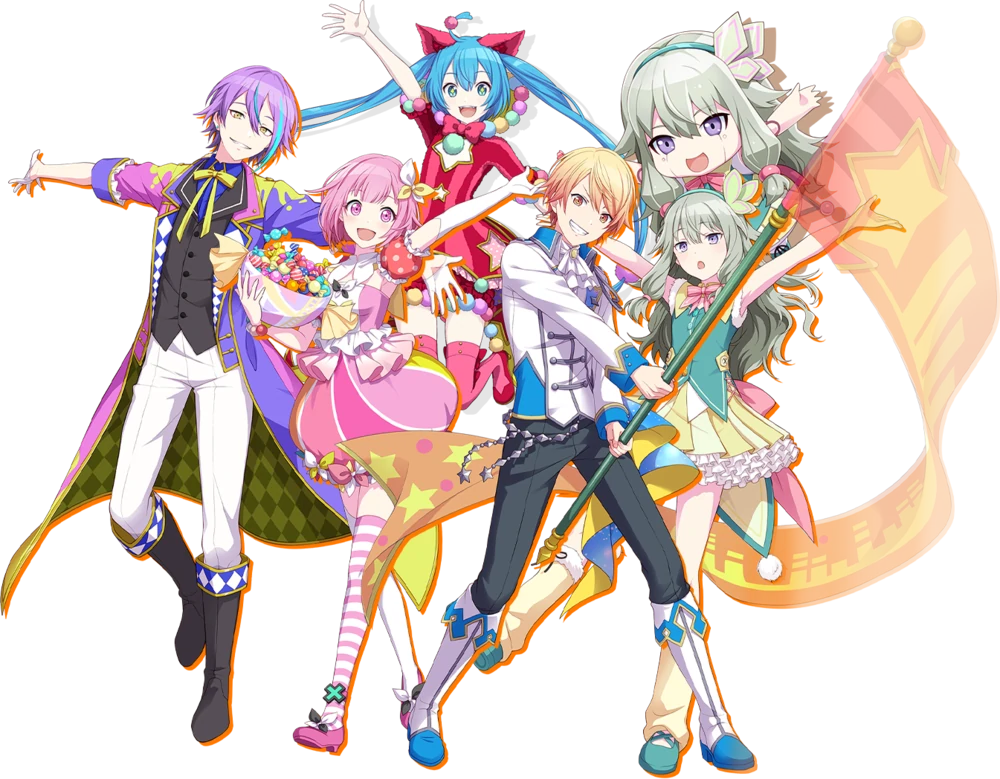

Miembros
Tsukasa Tenma
Emu Otori
Nene Kusanagi
Rui Kamishiro
Virtual Singers
Miku Hatsune
Rin Kagamine
Len Kagamine
Luka Megurine
MEIKO
KAITO
Historia
Tras fracasar en su audición, Tsukasa es contratado por Emu para devolver al
Phoenix Wonderland Stage a su antigua gloria con increíbles actuaciones.
Ambos actores reclutan al director de escena y experto en robótica Rui
y a la tímida cantante Nene, junto con su robot réplica, Nene-Robo.
Mientras Emu intenta convencer a Tsukasa de unirse a la compañía
Phoenix Wonderland, Tsukasa descubre una canción llamada "Untitled" en su teléfono.
Al reproducirla, ambos son transportados al SEKAI, donde conocerán a Miku, KAITO
y los peluches con los que actúan.

qweqewqeqw
wqeqweewqewq
wqewqewqeqw
wqewqeqwewq
wqeqwewqewqewq
qwewqeqwewq
hola
texto esto es un comentario (deberira ir en fila con el avatar)
432543
En esta página falta:
Colocar el sticker encima de la caja de comentarios y por encima de todo
Cómo hacer el marco con el nombre de usuario para la foto de perfil
Darle color a los nombres de cada personaje y el borde del color del grupo (recordar variable para el color)
432543
Escribir post
blablablabla